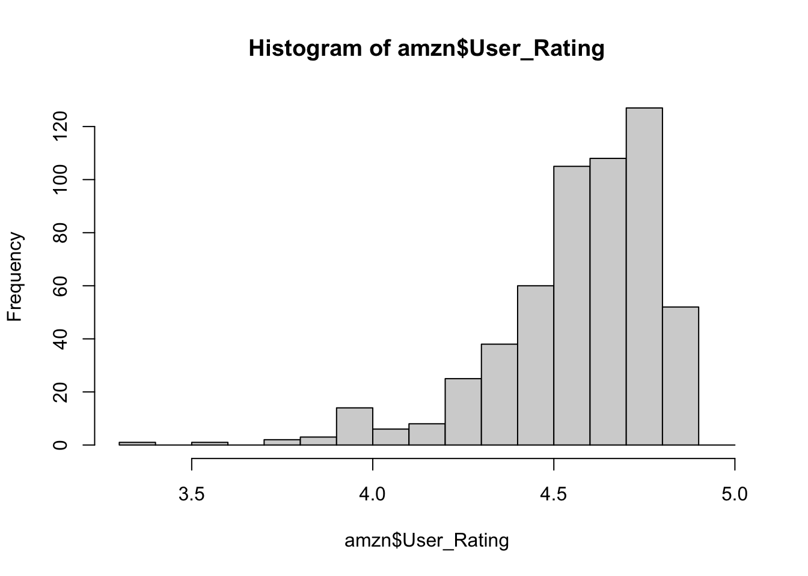
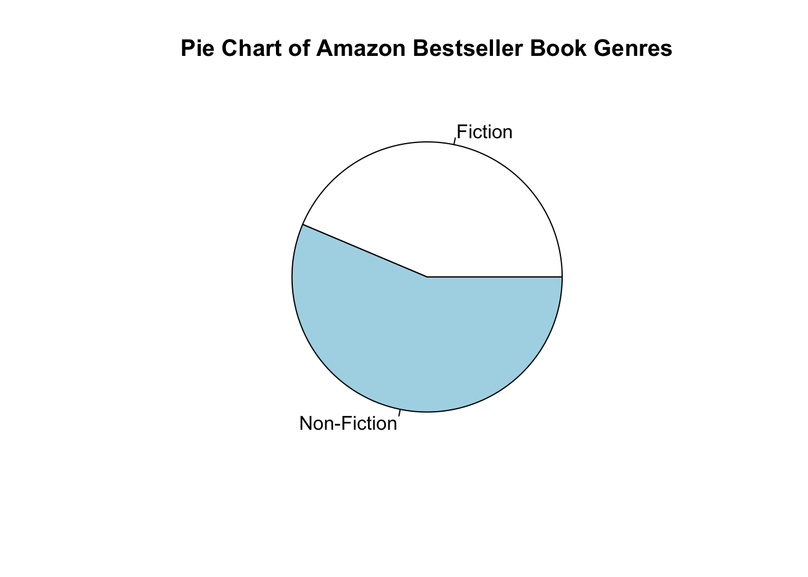
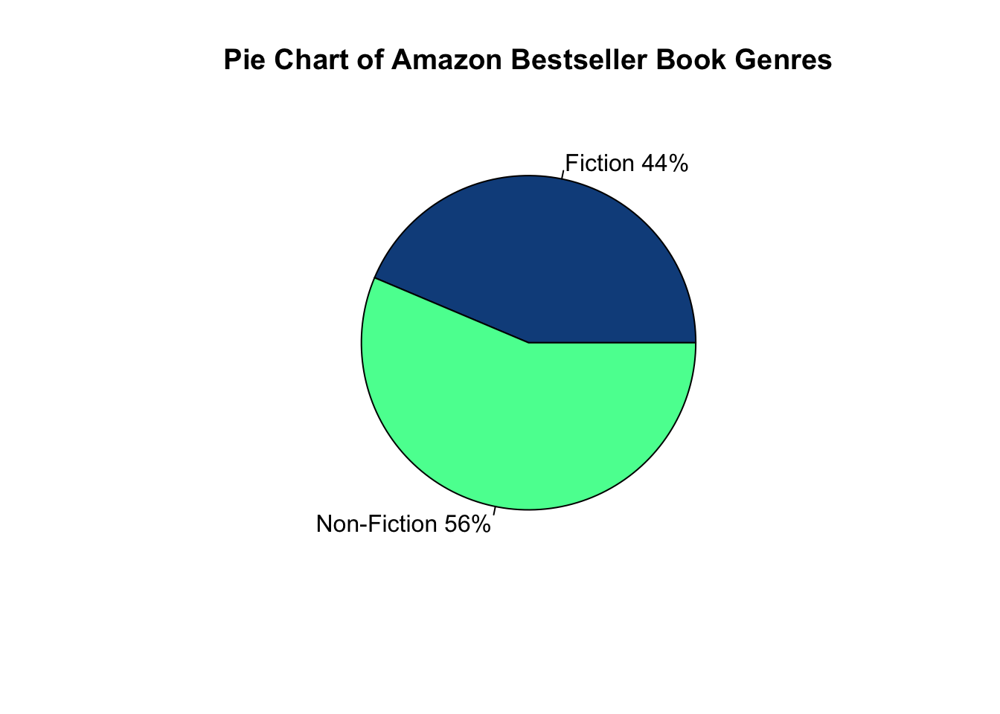

4 Plotting the Data
We use plotting as a data visualization method. Plotting the data is a way to tell a story about the data. R has some fantastic plotting packages such as ggplot2, Lattice, and leaflet that are covered in other courses. Today, let’s introduce the R base plotting functions that offer basic, yet very customizable, visualizations.
4.1 Base Plotting
Base plotting in R comes with an ability to create scatter plots, bar plots, pie charts, histograms, line charts, etc. These are very customizable and offer a solid foundation when transitioning to more advanced plotting packages. While many programmers prefer plotting packages mentioned above, we can still use the base plotting functions from R to create aesthetically pleasing plots. When we are plotting, arguments become very important and these plotting functions can take many arguments.
4.2 histograms
Histograms are visual representations of a spread of data. We can use these to quantify where the most frequent values are binned. Let’s create a histogram of the User Ratings.

The breaks, or bin width, of this histogram is pretty wide. Let’s create finer break areas by listing each rating in a sequence function.
# histogram of the user rating from the amzn dataframe with breaks from 3.3 to 5 spaced by 0.1
hist(x = amzn$User_Rating, breaks = seq(from = 3.3, to= 5.0, by=0.1))
A user rating of 4.8 is the most popular rating for this best seller colleciton of books. From here, we can customize the title, color, x label, y label, etc. Unsure of which arguments you can set? Don’t forget about the help function ?hist .
# histogram of the user rating from the amzn dataframe with breaks from 3.3 to 5 spaced by 0.1
hist(x = amzn$User_Rating, breaks = seq(from = 3.3, to= 5.0, by=0.1),
main = "Amazon Bestseller User Ratings", col = "lightblue", xlab = "User Ratings",
ylab = "Number of Occurences")
From the help function we found out the that these arguments dictate the following parameters:
| Argument Name | Definition |
|---|---|
main |
Plot Title |
col |
Color of the histogram |
xlab |
X label name |
ylab |
Y label name |
Each plotting function generally follows the same argument naming scheme. However, they can vary, and this is why it’s important to use the help() function for a plotting function. Additionally, a useful link to bookmark is the R Color Naming Guide. This contains the names of preloaded color names in R. This is where I found lightblue.
4.3 Pie Chart
Pie charts are useful plots when comparing the number of occurrences for categorical information. For example, one might use a pie chart for wins/losses of a sports team. One of the variables from the Amazon BestSellers dataset is Book Genre. Let’s create a pie chart that shows a pie chart of the genres. First, we’ll need to know which genres are part of the Amazon Book Genre dataset.
## [1] "Fiction" "Non Fiction"So there are only two broad genres within this dataset. Nonetheless, let’s create a pie chart of these. Let’s count the total number of occurrences for each genre.
# count the total number of occurrences for each genre.
fic = sum(amzn$Genre == 'Fiction')
nonfic = sum(amzn$Genre == 'Non Fiction')Now, we can use these total numbers to create our piechart.
# create a vector called slices that contain total number of fiction and nonfiction books
slices <- c(fic, nonfic)
# create a vector called lbls that contain labels for the respective total number of fiction and nonfiction books
lbls <- c("Fiction", "Non-Fiction")
# plot using the pie function
pie(x = slices, labels = lbls, main="Pie Chart of Amazon Bestseller Book Genres")
This is a good start. Let’s customize this more by adding colors and percentage values.
# create a pct vector that calculates the percentages of each value
pct <- round(slices/sum(slices)*100)
lbls <- paste(lbls, pct) # add percents to labels
lbls## [1] "Fiction 44" "Non-Fiction 56"Notice here we introduced the paste function that pasted the pct vector values to the end of the lbls values. The paste function and it’s cousin, paste0, are very useful when dealing with character string combinations. This is a heavily used function for many developers. To expand or lbls further, we can add the % sign to the end of each value with the same paste function.
## [1] "Fiction 44%" "Non-Fiction 56%"# create color vector that matches a color for each genre
cols = c("dodgerblue4", "seagreen1")
pie(x = slices,labels = lbls, col=cols,main="Pie Chart of Amazon Bestseller Book Genres")
4.4 Scatter Plot
Another useful plot that can help describe a dataset is a scatter plot. Scatter plots are often used to evaluate a relationship between two variables. In our case, let’s investigate the relationship between number of reviews and user rating.

As we can see, there’s not a distinct correlation between number of reviews and user rating. In other words, more reviews does not necessarily indicate a higher or lower user rating for this dataset. Remember, this dataset only contains the Best Sellers, so our data is limited to the best of the best. We’d likely see a different trend if we had all of the data available. Anyway, even plots that show us no correlation are useful. Let’s spice this up a bit.
plot(x = amzn$Reviews, y = amzn$User_Rating, xlab = "Total Reviews", ylab = "Average User Rating", main="Amazon Bestsellers 2009-2019")We can actually go even further here and change our points using the pch argument which is short for plotting character. Then, we can adjust the background color of the points with the bg argument. To go even further, we can also change the size of the point with teh cex argument.
plot(x = amzn$Reviews, y = amzn$User_Rating, xlab = "Total Reviews", ylab = "Average User Rating", main="Amazon Bestsellers 2009-2019",
pch = 23, bg = 'coral', cex = 2.0, col = "dodgerblue4")
With a few additional arguments, we’re given the ability to customize any plot in R.